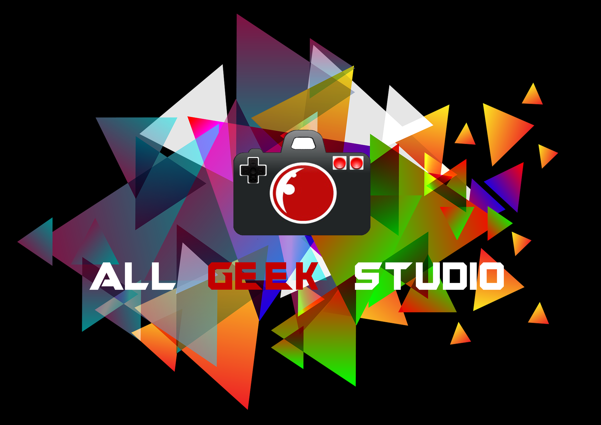

Je m'appelle Guillaume Texier.
35 ans et Geek ! C'est très important de le signaler car la vie du trentenaire Geek est on ne peut plus trépidente.
Rompu à la vie en entreprise, j'y ai excercé durant plus de 15 ans la logistique dans l'entreprise Geodis .
J'y occupais le poste de Chef d'équipe logistique.
C'est un métier un peu bizarre qui t'impose de porter des colis et de compter des trucs tout en gérant une équipe composée d'enfant de 20 à 55 ans.
C'est un métier passionnant qui prend aux tripes mais j'ai eu envie de voir autre chose et notamment le métier de Web développeur
A travers cette "magnifique" page Web, je vais essayer de vous montrer que la vie de geek est passionnante et cela tout en m'exerçant à développer.
Ah, les jeux vidéo. Ma passion première.
Débutée jeune et sur Nintendo, je suis vite passé à PlayStation pendant très longtemps.
Mais le vice du PC Master Race m'a attrapé et me voilà heureux propriétaire d'un PC Gamer made in moi-même.
Pour moi les JVs sont un échappatoire qui me permettent d'assouvir un besoin d'évasion.
Ce besoin a trouvé son paroxysme avec la Saga mythique des Metal Gear Solid. Si vous voulez en savoir plus sur ce pilier du jeu Vidéo c'est juste
ici
Cinéfile depuis toujours, j'adore regarder des films et des séries. Ils sont comme les Jeux Vidéo mais sans clavier ou manette. Tous les genres me vont mais j'ai quand-même un faible pour la SF et l'univer Médiéval-Fantastique. JRR si tu me lis ☺ .
Si je devais faire une simple liste de mes trois films préférer elle serait :
Un soir de nouvel an l'un de mes amis a eu l'idée sogrenue de faire une Web série. L'histoire d'un geek complètement paumé de le monde incompréhensible de la réalité vraie.
Je dois dire que nous nous sommes bien amusés. Cela nous a même permis d'exposer notre oeuvre chaque année à la JTF (Japan Tours Féstival). Allez donc voir ça sur notre chaine Youtube. Éclate garantie ;-). Petite astuce, pour la chaîne il faut cliquer sur le logo juste en dessous.

Et oui, je suis peut-être Geek, mais je suis également propriétaire. Et être propriétaire c'est du boulot. J'ai du apprendre à me servir d'outils divers et variés tel que